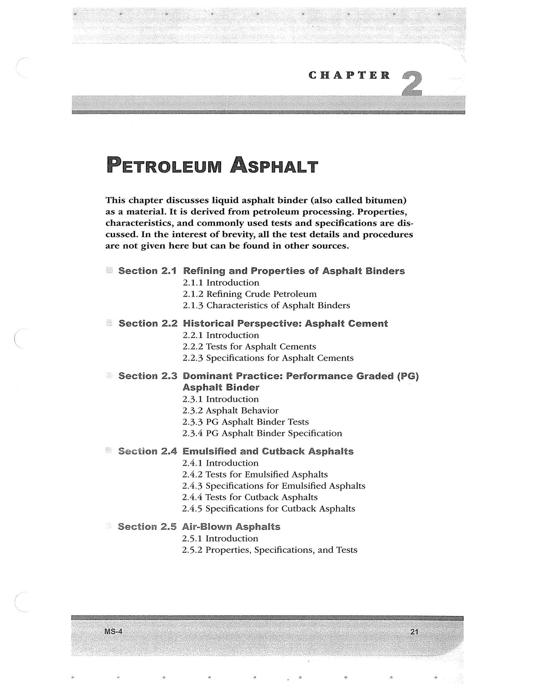

PDF page 55 · book page sequence 21


Searchable transcription
Unproofread OCR · 157 detected words; mean OCR confidence 93.13. Check technical values, symbols and table columns against the scan.
CHAPTER
PETROLEUM ASPHALT
This chapter discusses liquid asphalt binder (also called bitumen) as a material. It is derived from petroleum processing. Properties, characteristics, and commonly used tests and specifications are dis- cussed. In the interest of brevity, all the test details and procedures are not given here but can be found in other sources.
« Section 2.1 Refining and Properties of Asphalt Binders 2.1.1 Introduction 2.1.2 Refining Crude Petroleum 2.1.3 Characteristics of Asphalt Binders
«= Section 2.2 Historical Perspective: Asphalt Cement 2.2.1 Introduction 2.2.2 Tests for Asphalt Cements 2.2.3 Specifications for Asphalt Cements
- Section 2.3 Dominant Practice: Performance Graded (PG) Asphalt Binder 2.3.1 Introduction 2.3.2 Asphalt Behavior 2.3.3 PG Asphalt Binder Tests 2.3.4 PG Asphalt Binder Specification
section 2.4 Emulsified and Cutbhack Asphalts 2.4.1 Introduction 2.4.2 Tests for Emulsified Asphalts 2.4.3 Specifications for Emulsified Asphalts 2.4.4 Tests for Cutback Asphalts 2.4.5 Specifications for Cutback Asphalts
Section 2.5 Air-Blown Asphalis 2.5.1 Introduction 2.5.2 Properties, Specifications, and Tests